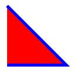

<canvas>标签是HTML5中的新标签，Internet Explorer 9+, Firefox和Chrome等都支持<canvas>标签。
<canvas>元素和SVG之间一个重要的区别是：使用<canvas>来绘制图形是通过调用它提供的方法，而使用SVG是通过构建一棵XML元素树来实现的。这两种方式可以互相模拟，但是各有优劣。比如：使用SVG来绘制图形，可以很简单地通过移除相应的元素来编辑图片。而使用<canvas>的话，要移除图片中的元素就只能先擦除当前的再重新绘制一遍。<canvas>的优势在于，它绘制的API是基于JavaScript的，并且相对比较简洁。
简单例子
下面是一个使用画布API的简单例子，它在<canvas>元素中绘制一个红色的正方形和一个蓝色的圆。
<canvas id="square" width=10 height=10></canvas> // 一个红色的正方形 |
其中，调用getContext()方法时，传递一个”2d”参数，会获得一个CanvasRenderingContext2D对象，使用该对象可以在画布上绘制二维图形，这里简称其为『上下文对象』。
还有，arc()方法创建圆或部分圆的语法是context.arc(x, y, r, sAngle, eAngle, counterclockwise);
| 参数 | 描述 |
|---|---|
| x | 圆心x坐标 |
| y | 圆心y坐标 |
| r | 圆半径 |
| sAngle | 起始角，以弧度计，三点钟位置为0度 |
| eAngle | 结束角，以弧度计 |
| counterclockwise | true为逆时针，false为顺时针 |
绘制线段和填充形状
如下代码定义一条包含了两条线段的路径：
<canvas id="my_canvas_id" width="500" height="500"></canvas> |
渲染图形如下：

注意，之所以上述代码填充成了一个三角形，但是只勾勒了三角形的两条边，是因为对于这样的『未闭合』的子路径，调用fill()方法填充的时候，会假设子路径的终点和子路径的起点连接起来。想要勾勒出上述三角形的三条边，可以调用closePath()方法将子路径的起点和终点真正连接起来，当然，也可以lineTo(100,100)。
非零绕数原则
当单条子路径与自身相交（比如一个内部包含正方形的六边形）时，画布调用fill()方法填充图形时需要能够确定哪些区域在路径里面，哪些在外面。这个判断的原则称为『非零绕数原则』。
非零绕数原则：想象一条从点P出发没着任意方向无限延伸（或者一直延伸到路径所在的区域外某点）的射线。现在从0开始初始化一个计数器，然后对所有穿过这条射线的路径进行枚举。每当一条路径顺时针方向穿过射线的时候，计数器就加1；反之，就减1，最后枚举完所有的路径之后，如果计数器的值不是0，那么就认为P是在路径内。反之，如果计数器值是0，则认为P在路径外。